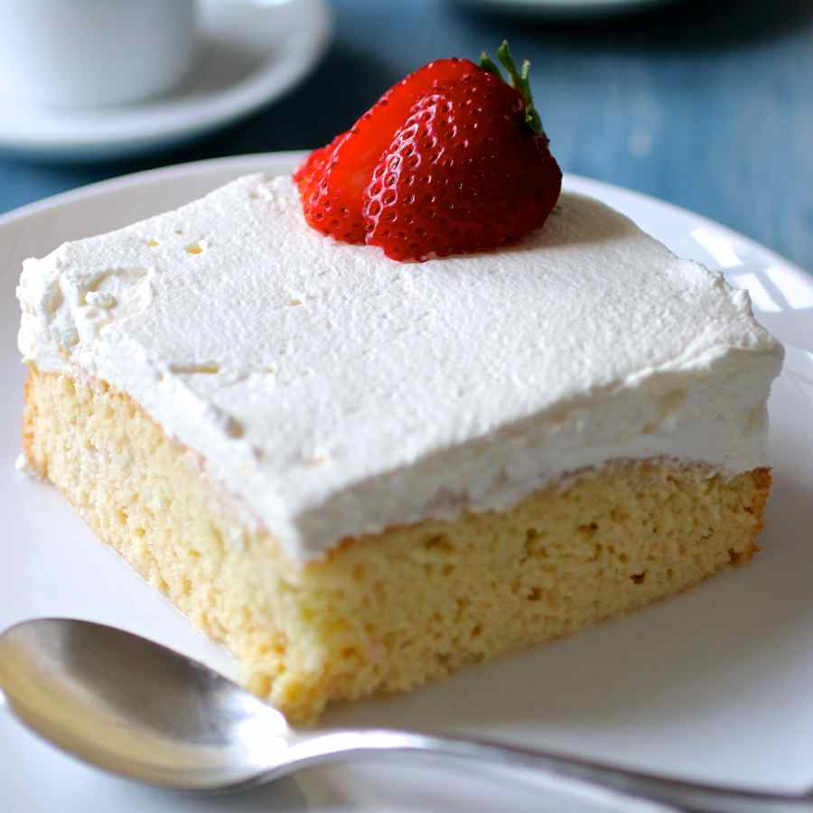
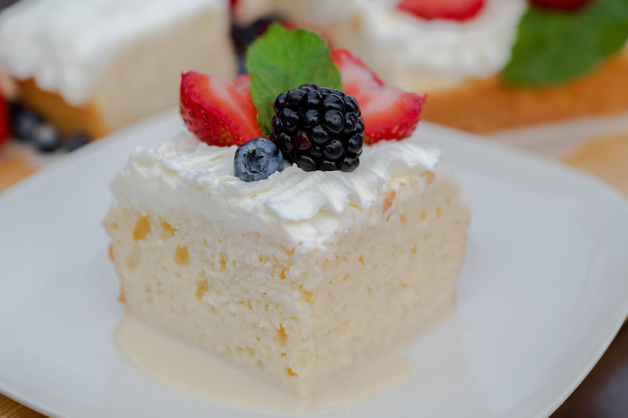
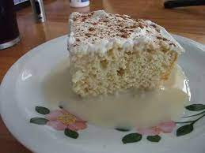

Sushi Bake
Origin: Asian Source: Own recipe Category: Main dish
Do you want easy, quick way to enjoy sushi without having to do all of the work? Try to make our sushi bake, which takes 10 minutes to assemble and 20 minutes to bake in the oven. Our recipe feeds 8 people.
Ingredients:
- 1 avocado
- 1/2 cup soy sauce
- 2 cups of rice
- 1 tablespoon of rice vinegar
- 3 tablespoons of mayo
- 1 8 oz package of imitation crab
- 1 medium piece of salmon
- 1 cucumber
- 3 tablespoons of sriracha


Steps:
- Preheat oven to 350 degrees
- Make rice. Mix rice vinegar into rice after it is cooked
- Lay out all of the rice at the bottom of a large baking dish
- Lay out the imitation crab and cucumber on top of the rice
- Mix the imitation crab and 2 TBSP mayo into a crab salad
- Smear the crab salad onto the next layer
- Slice the avocado and lay those on the top of the dish
- Pour the rest of the mayo and sriracha on top
- Bake for 20 minutes
Enjoy! Joshua Vijayasegar and Ethan Tai
Double Chocolate Cookies
Origin: Michigan Source: Family Recipe Category: Dessert
My daughter learned to make these cookies at a baking camp at Zingermanns and has tweaked the recipe to fit the taste buds of her siblings. They are extremely sugary so the salt helps to balance it. Note, these cookies are best eaten very quickly.
Recipe Ingredients
- Unsalted butter
- Granulated Sugar
- Packed light or dark brown sugar
- Large egg
- Pure vanilla extract
- Semi-sweet chocolate chunks (melted)
- All-purpose flour
- Natural unsweetened cocoa powder
- Baking soda
- Salt
- Semi-sweet chocolate chunks
Recipe Steps
- In a mixing bowl cream together the butter, granulated sugar, and brown sugar
- Add the egg and vanilla extract and beat well
- Add the melted chocolate
- In a separate bowl combine the flour, baking soda, cocoa powder and salt
- Combine the wet and dry ingredients
- Add the unmelted chocolate chunks.
- Form 15 cookies and place on a baking sheet.
- Cook for 12 to 13 minutes at 350 degrees.
Additional Food images


Pesto Pasta
Origin: Italian Source: https://www.simplyrecipes.com/recipes/fresh_basil_pesto/ Category: Main Dish
Pesto pasta has always been a comfort dish for me; it's quick, it's easy, and great food for a dinner party or a comfy night in! It requires six main ingredients, plus additional spices as you see fit. If you're not in the mood for pasta, you can always eat the pesto sauce on bread, crackers, or eggs! This recipe makes enough for around 4 people, so adjust accordingly.
Recipe Ingredients
- 2 cups fresh basil leaves, packed (can add some spinach if you don't have enough basil leaves)
- ¾ cup freshly grated Parmesan or Romano cheese
- ½ cup extra virgin olive oil
- ⅓ cup pine nuts (can sub with same amount of chopped walnuts)
- 3 cloves garlic, minced
- Salt & pepper to taste
- 8 oz of your choice of pasta (my preferred is penne, but any type will work)
Recipe Steps
- Heat up water in a pot for the pasta and put in a teaspoon of salt.
- Pulse the basil and pine nuts in a food processor. Add a bit of olive oil as need be if the ingredients are too dry.
- Add the garlic and cheese to the food processor.
- Once water starts boiling in the pot, add pasta. Stir every couple of minutes.
- Combine the wet and dry ingredients
- While the food processor is running, slowly pour in olive oil.
- Once pasta is al-dente, turn off the heat and drain the pasta water. Save some of it if you want your pesto to be slightly thinner.
- Add the pasta back into the pot, mix in the pesto, and voila!
Additional Food images


Tres Leches Cake
Origin: Latin America Source: https://www.allrecipes.com/recipe/7399/tres-leches-milk-cake/ Category: Dessert
This cake is a staple at any Latin birthday or celebration. While I haven’t learned exactly how to make it, if you ask any aunt or mother they’ll typically know how to make it and have their own secrets and tips to make it the “best way.” The cake is typically very moist and is best eaten wet.
Recipe Ingredients
- 1 ½ cups all-purpose flour
- 1 teaspoon baking powder
- ½ cup unsalted butter
- 1 cup white sugar
- 5 eggs
- ½ teaspoon vanilla extract
- 2 cups whole milk
- 1 (14 ounce) can sweetened condensed milk
- 1 (12 fluid ounce) can evaporated milk
- 1 ½ cups heavy whipping cream
- 1 cup white sugar
- 1 teaspoon vanilla extract
Recipe Steps
- Preheat the oven to 350 degrees F (175 degrees C). Grease and flour a 9x13-inch baking pan.
- Sift flour and baking powder together; set aside.
- Beat sugar and butter together in a large bowl with an electric mixer until light and fluffy. Add eggs and vanilla; beat well. Add flour mixture, about 1/2 cup at a time, mixing until well blended. Pour batter into the prepared pan.
- Bake in the preheated oven until a toothpick inserted into the center comes out clean, about 30 minutes. Pierce cake all over with a fork; let cool to room temperature.
- Mix whole milk, condensed milk, and evaporated milk together in a bowl; pour over the top of the cooled cake and allow to soak in.
- Whip cream, remaining 1 cup of sugar, and 1 teaspoon vanilla in a chilled glass or metal bowl with an electric mixer until thick. Spread over the top of the filling. Keep cake refrigerated until serving.
Additional Food images
  Enchiladas Verdes de Pollo
Origin: Mexico Source: https://inmamamaggieskitchen.com/enchiladas-verdes-de-pollo/ Category: Main Dish
This is one of my favorite dishes to eat, especially my mother’s recipe but I do not know it or have access. There are a variety of recipes to make this dish and this happens to be different from my mother's because she does not place the enchiladas in the oven. I still think that it is a good recipe that should get you something similar.
Recipe Ingredients
For the Salsa:
- 2 lbs tomatillos (about 16 tomatillos)
- 4 serrano peppers (stem removed)
- 2 garlic cloves
- ¼ onion roughly chopped
- 4 cups water (enough to cover the tomatillos)
- 1 bunch cilantro
- 1 teaspoon salt
- 1 tablespoon olive oil
For the Enchiladas:
- 1 cup canola oil
- 2 cups shredded chicken
- 12 corn tortillas
For the Toppings:
- crema Mexicana as desired
- crumbled queso fresco (or cotija)
- diced raw onion as desired
- chopped cilantro as desired
Recipe Steps
For the Salsa:
- Place the tomatillos, garlic, serranos, onion, and water in a stockpot.
- Cover and bring to a boil.
- Simmer for 7-10 minutes.
- Discard water.
- Remove the ingredients from the stock pot and into the blender.
- Add salt and cilantro to the blender.
- Blend until smooth.
- Heat up oil in the same stock pot used to cook the salsa.
- Pour in the salsa verde and cook for 10 minutes.
- Stir occasionally.
For the Enchiladas:
- Heat up oil in a frying pan.
- Fry the tortillas. 1 minute on each side.
- Place on a paper towel to drain any excess oil.
- Repeat with all the tortillas.
- To assemble, place a tortilla in a baking dish, and using your best judgment add about 2 tbsps shredded chicken.
- Roll up the tortilla.
- Make sure the seam side is down.
- Repeat with the remaining tortillas.
- Heat up the oven to 375 degrees F.
- Cover the tortillas with aluminum foil and place in the oven.
- Bake for 15 minutes.
- Keep in a warm oven until ready to serve.
- Pour a generous amount of the salsa verde on the plate.
- Add the chicken enchiladas to a plate.
- Pour more sauce on top.
- Add the desired toppings – crema Mexicana, queso fresco, cilantro, and onion.
Additional Food images